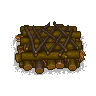

Place for burning corpses
| Place for burning corpses | |
|---|---|
 | |
Basic information
| |
Building Information
| |
Horizontal x Vertical :
|
6x5 |
Rotatable :
|
False |
Location(s)
| |
| Crematorium | |

The place for burning  corpses is used to cremate corpses in the crematorium which can be found south of the morgue entrance. Cremated corpses will leave behind a
corpses is used to cremate corpses in the crematorium which can be found south of the morgue entrance. Cremated corpses will leave behind a
burial certificate, some ash and salt. Places for burning can only be used for one cremation. This tech is unlocked in the theology tech tree under the graves category.
Cost
| Icon | Materials Required | Energy | Notes |
|---|---|---|---|
| 8× Wood billet |
single use |

| ||||||||